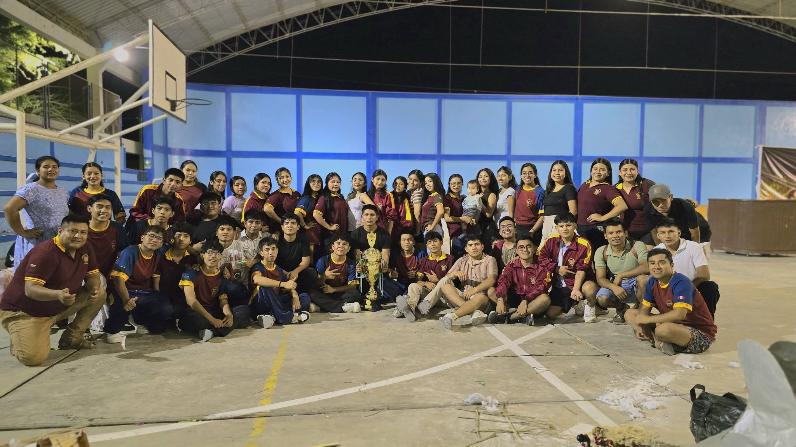
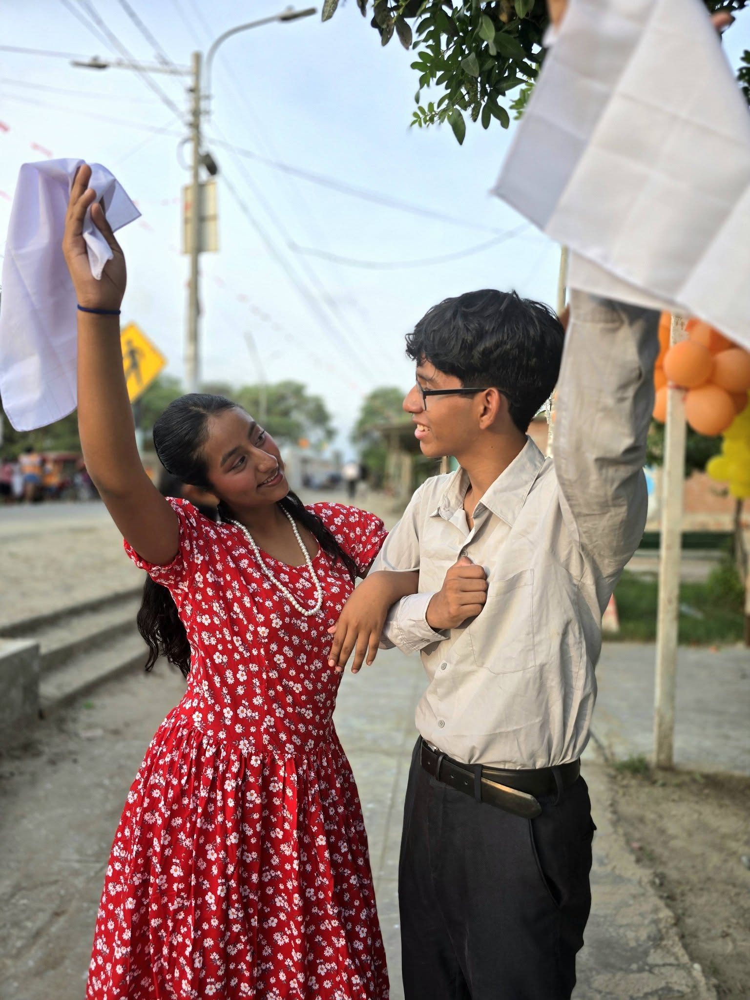
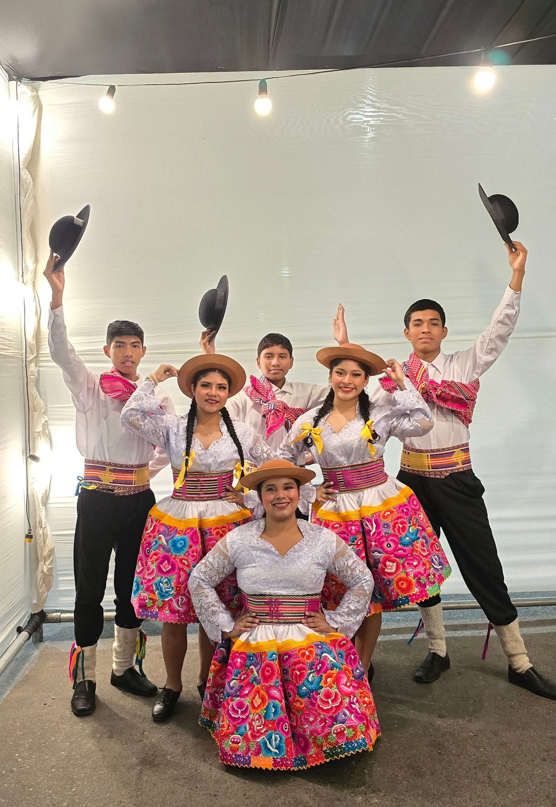
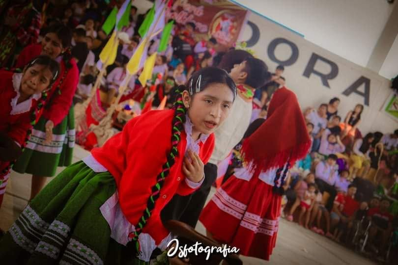
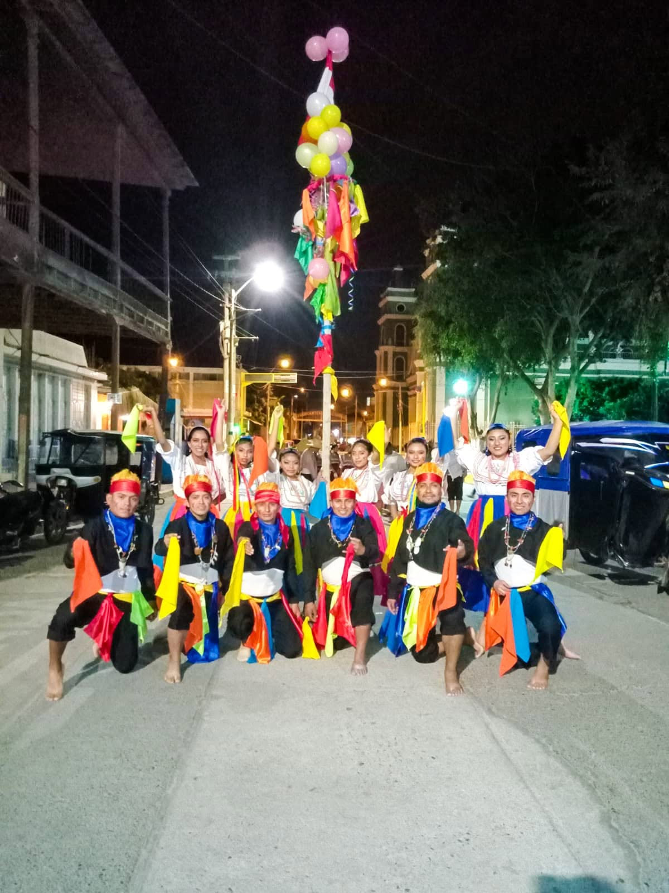
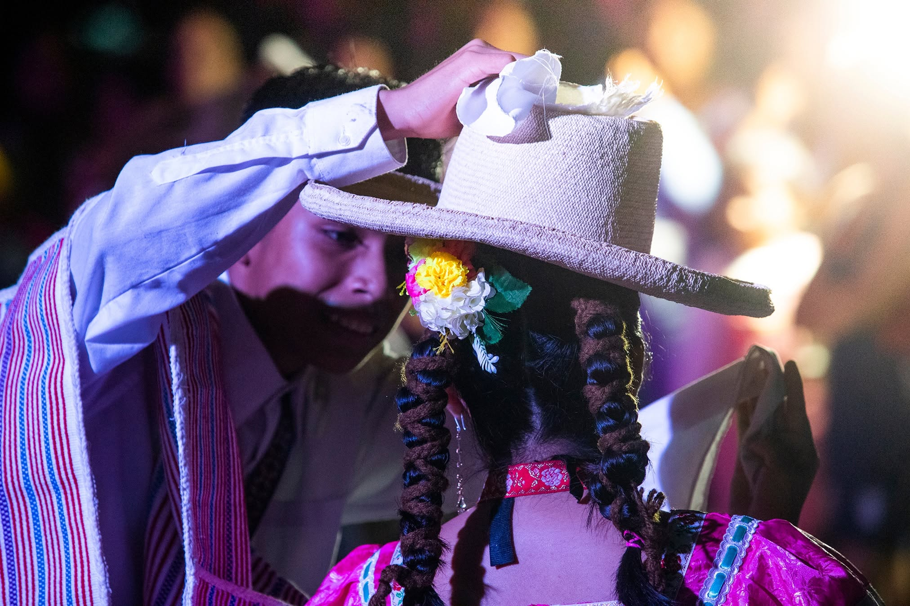

2009
Año de fundación
Desde 2009
Preservamos,
Preservamos,
difundimos y vivimos
el folklore peruano
Somos una agrupación cultural de Catacaos que promueve nuestras tradiciones a través de la danza, la formación y el amor por nuestra identidad.
17+
Años de trayectoria
3
Países visitados
2021
Punto de Cultura
🎉
🎂 Hoy estamos de fiesta
¡Feliz cumpleaños!
Con cariño, tu familia de Pasión y Sentimiento Cultural.
Agenda PySC
Lo próximo en nuestra familia cultural
Presentaciones, convocatorias, avisos y momentos especiales de Pasión y Sentimiento Cultural.
Actualizado desde nuestra agenda
Cargando agenda...
Lo que hacemos
Arte, formación
Arte, formación
y comunidad
Trabajamos por mantener vivas nuestras costumbres y crear espacios donde nuevas generaciones se formen con disciplina, pasión y valores.
Más sobre nosotros →01
Formación artística
Enseñamos danzas tradicionales a niños, jóvenes y adultos, fortaleciendo su identidad cultural.
02
Proyectos culturales
Desarrollamos iniciativas que conectan la danza, la identidad y la participación de artistas y de la comunidad.
03
Presentaciones
Representamos con orgullo la diversidad cultural del Perú dentro y fuera del país.

Quiénes somos
Una historia construida con pasión, identidad y comunidad
El Grupo Folklórico Pasión y Sentimiento Cultural nació en Catacaos en el año 2009 con el propósito de promover y preservar las manifestaciones culturales del Perú a través de la danza.
A lo largo de nuestra trayectoria hemos formado nuevas generaciones, desarrollado proyectos culturales y representado nuestra identidad dentro y fuera del país.
Conoce nuestra historia →
Nuestros proyectos
Ver todos los proyectos →
Cultura que transforma y conecta

Concurso nacional
Catacaos, Color y Tradición
Un espacio de encuentro para agrupaciones folclóricas, artistas y amantes de nuestras tradiciones.
Conocer proyecto →
Formación
Talleres de danza
Espacios de aprendizaje para niños, jóvenes y adultos.
Conocer proyecto →
Nuestra galería
Ver toda la galería →
Momentos que cuentan nuestra historia






¿Quieres conocernos?
Contáctanos →
Estamos listos para compartir nuestra cultura contigo.
Si deseas integrarte al grupo, organizar una presentación o conocer más sobre nuestras actividades, estaremos encantados de conversar contigo.